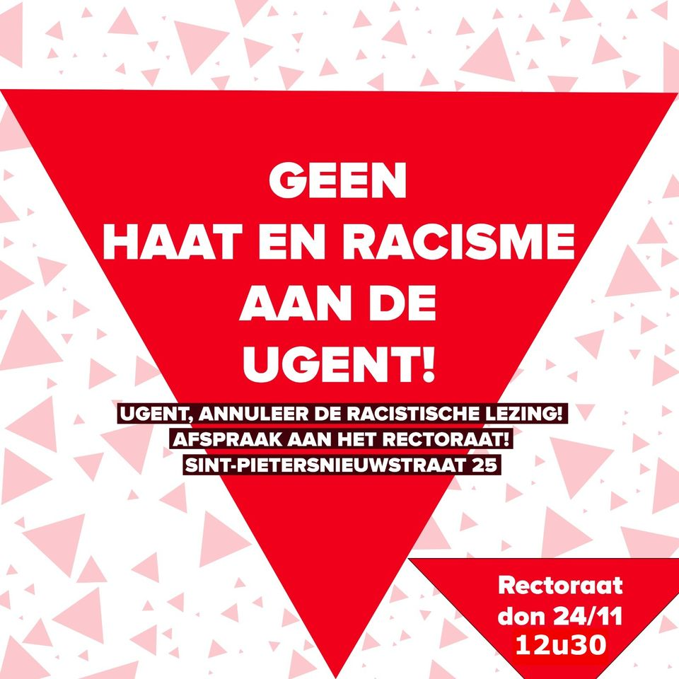
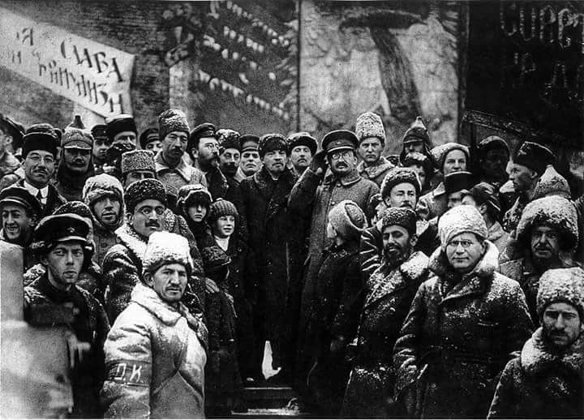

Rector: annuleer de racistische lezing!
12:30 - Thursday 24 Nov 2022
@ Rectoraat UGent
Organised by Anarchistisch Collectief Antwerpen
View on Facebook
{
"name": "Rector: annuleer de racistische lezing!",
"startDate": "2022-11-24",
"startTime": "12:30",
"endTime": "14:30",
"location": "Rectoraat UGent",
"description": "Organized by Anarchistisch Collectief Antwerpen. See https://www.facebook.com/events/1311242099687442/ for more info",
"timeZone": "Europe/Brussels",
"uid": "https-www-facebook-com-events-13112420996874422022-11-24t12-30-00-01-00",
"label": "Add Rector:... to your Calendar",
"iCalFileName": "https-www-facebook-com-events-13112420996874422022-11-24t12-30-00-01-00",
"options": ["Apple", "Google|Google Calendar", "Microsoft365", "Outlook.com", "Yahoo", "iCal|iCal (.ics file)"],
"trigger": "click",
"listStyle": "overlay",
"lightMode": "system"
}

vormingsdag Russische Revolutie
09:00 - Saturday 03 Dec 2022
@ Peperfabriek
Organised by Actief Linkse Studenten Antwerpen
View on Facebook
{
"name": "vormingsdag Russische Revolutie",
"startDate": "2022-12-03",
"startTime": "09:00",
"endTime": "11:00",
"location": "Peperfabriek",
"description": "Organized by Actief Linkse Studenten Antwerpen. See https://www.facebook.com/events/462004116054248/ for more info",
"timeZone": "Europe/Brussels",
"uid": "https-www-facebook-com-events-4620041160542482022-12-03t09-00-00-01-00",
"label": "Add vormingsd... to your Calendar",
"iCalFileName": "https-www-facebook-com-events-4620041160542482022-12-03t09-00-00-01-00",
"options": ["Apple", "Google|Google Calendar", "Microsoft365", "Outlook.com", "Yahoo", "iCal|iCal (.ics file)"],
"trigger": "click",
"listStyle": "overlay",
"lightMode": "system"
}
Met ROSA Brugge naar de betoging tegen geweld op vrouwen en LGBTQIA+ personen
10:00 - Sunday 27 Nov 2022
@ 1 person responded
Organised by Campagne ROSA - NL
View on Facebook
{
"name": "Met ROSA Brugge naar de betoging tegen geweld op vrouwen en LGBTQIA+ personen",
"startDate": "2022-11-27",
"startTime": "10:00",
"endTime": "12:00",
"location": "1 person responded",
"description": "Organized by Campagne ROSA - NL. See https://www.facebook.com/events/393088149618306/ for more info",
"timeZone": "Europe/Brussels",
"uid": "https-www-facebook-com-events-3930881496183062022-11-27t10-00-00-01-00",
"label": "Add Met ROSA... to your Calendar",
"iCalFileName": "https-www-facebook-com-events-3930881496183062022-11-27t10-00-00-01-00",
"options": ["Apple", "Google|Google Calendar", "Microsoft365", "Outlook.com", "Yahoo", "iCal|iCal (.ics file)"],
"trigger": "click",
"listStyle": "overlay",
"lightMode": "system"
}
Met ROSA Antwerpen, betogen tegen geweld op vrouwen en LGBTQIA+ personen
10:20 - Sunday 27 Nov 2022
@ Antwerpen-Centraal
Organised by Campagne ROSA - NL
View on Facebook
{
"name": "Met ROSA Antwerpen, betogen tegen geweld op vrouwen en LGBTQIA+ personen",
"startDate": "2022-11-27",
"startTime": "10:20",
"endTime": "12:20",
"location": "Antwerpen-Centraal",
"description": "Organized by Campagne ROSA - NL. See https://www.facebook.com/events/2323182237831839/ for more info",
"timeZone": "Europe/Brussels",
"uid": "https-www-facebook-com-events-23231822378318392022-11-27t10-20-00-01-00",
"label": "Add Met ROSA... to your Calendar",
"iCalFileName": "https-www-facebook-com-events-23231822378318392022-11-27t10-20-00-01-00",
"options": ["Apple", "Google|Google Calendar", "Microsoft365", "Outlook.com", "Yahoo", "iCal|iCal (.ics file)"],
"trigger": "click",
"listStyle": "overlay",
"lightMode": "system"
}
With ROSA, marching against violence against women and LGBTQIA+
13:00 - Sunday 27 Nov 2022
@ Gare Centrale
Organised by Campagne ROSA - NL
View on Facebook
{
"name": "With ROSA, marching against violence against women and LGBTQIA+",
"startDate": "2022-11-27",
"startTime": "13:00",
"endTime": "15:00",
"location": "Gare Centrale",
"description": "Organized by Campagne ROSA - NL. See https://www.facebook.com/events/620730066502197/ for more info",
"timeZone": "Europe/Brussels",
"uid": "https-www-facebook-com-events-6207300665021972022-11-27t13-00-00-01-00",
"label": "Add With... to your Calendar",
"iCalFileName": "https-www-facebook-com-events-6207300665021972022-11-27t13-00-00-01-00",
"options": ["Apple", "Google|Google Calendar", "Microsoft365", "Outlook.com", "Yahoo", "iCal|iCal (.ics file)"],
"trigger": "click",
"listStyle": "overlay",
"lightMode": "system"
}

Concours ROSA Wedstrijd
17:00 - Sunday 15 Jan 2023
@ Public
· Anyone on or off Facebook
Organised by Campagne ROSA - NL
View on Facebook
{
"name": "Concours ROSA Wedstrijd",
"startDate": "2023-01-15",
"startTime": "17:00",
"endTime": "19:00",
"location": "Public
· Anyone on or off Facebook",
"description": "Organized by Campagne ROSA - NL. See https://www.facebook.com/events/478306544283203/ for more info",
"timeZone": "Europe/Brussels",
"uid": "https-www-facebook-com-events-4783065442832032023-01-15t17-00-00-01-00",
"label": "Add Concours... to your Calendar",
"iCalFileName": "https-www-facebook-com-events-4783065442832032023-01-15t17-00-00-01-00",
"options": ["Apple", "Google|Google Calendar", "Microsoft365", "Outlook.com", "Yahoo", "iCal|iCal (.ics file)"],
"trigger": "click",
"listStyle": "overlay",
"lightMode": "system"
}